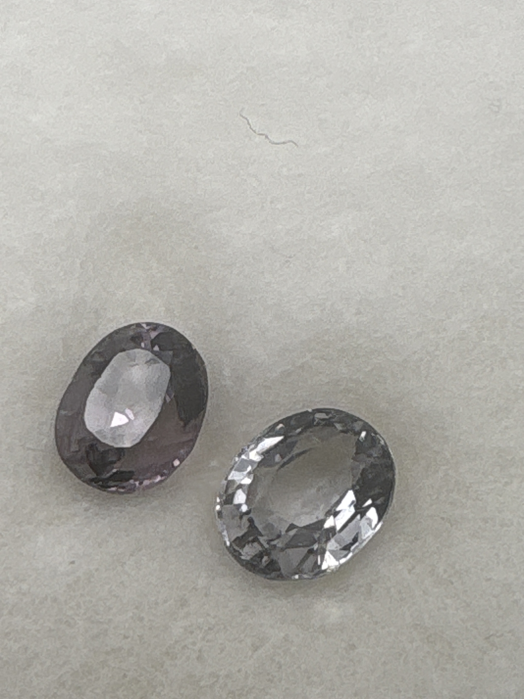

The Gem Drawer › No. 74

Two oval spinels of different colors: near-colorless grey and greyish mauve.
| Catalogue no. | #74 |
|---|---|
| As labeled | Spinel - labeled "Burmese Spinel Mix" - PAIR, 2 stones of different colors in this box, see notes |
| Shape / cut | Oval (both stones) |
| Weight | 1.15+ (combined, presumed) |
| Measurements | Not recorded |
| Colour | Mixed: near-colorless/pale gray and grayish-purple/mauve |
| Clarity / condition | Not recorded |